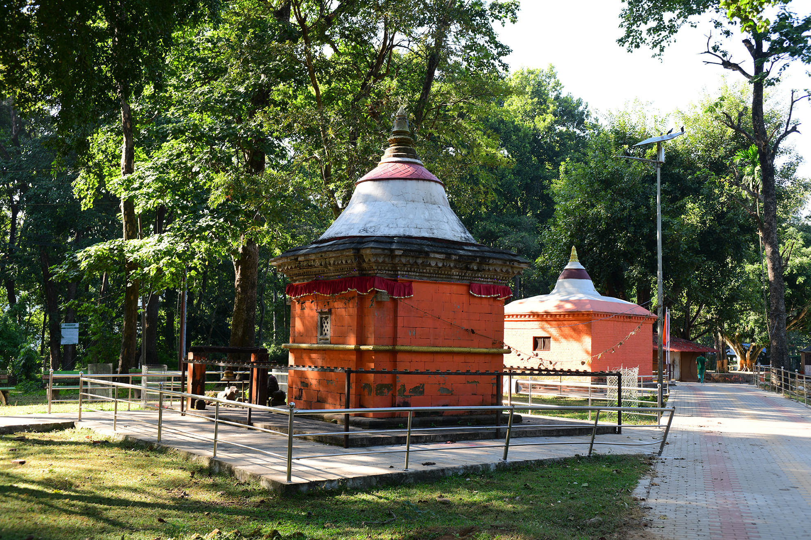
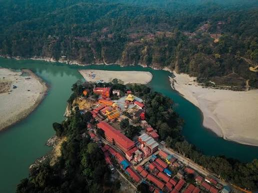
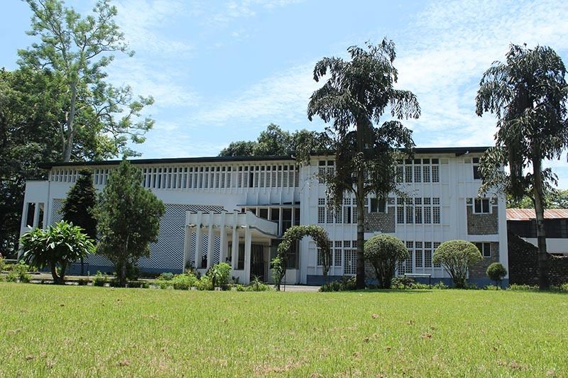
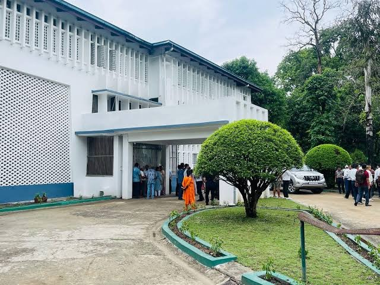
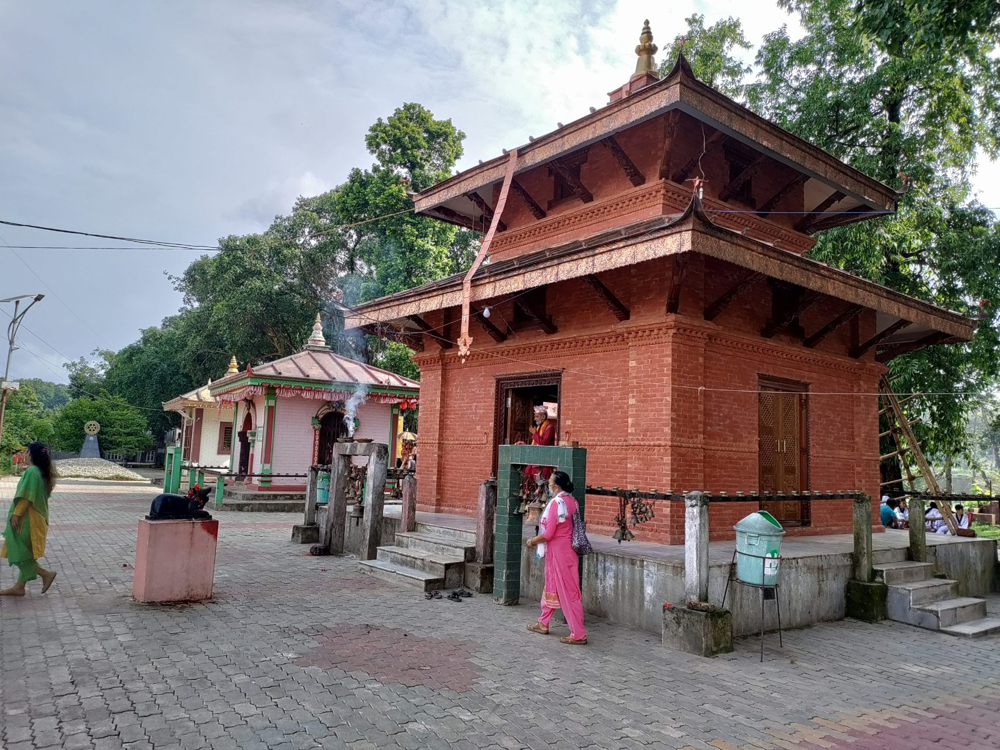
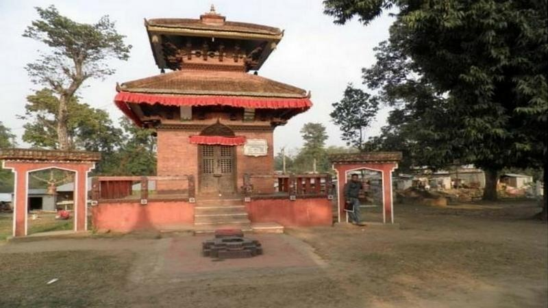
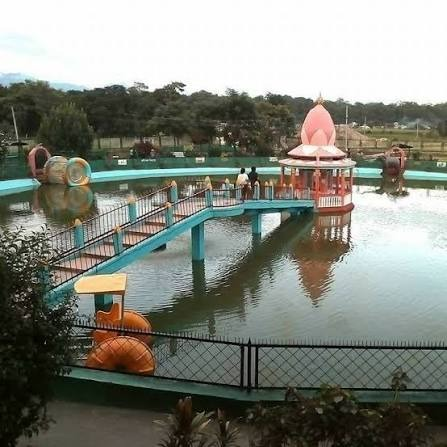
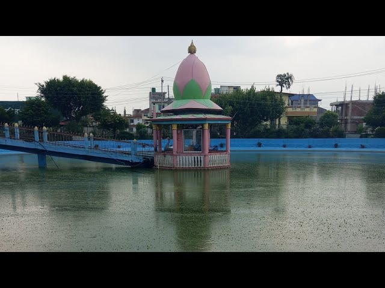

Discover the sacred places, historic landmarks and cultural heritage that make Bharatpur and its surroundings unique.
Devghat is one of the most important religious destinations around Bharatpur, known for its sacred rivers, temples, ashrams and peaceful spiritual atmosphere. Located at the meeting point of the Kali Gandaki and Trishuli rivers, the area offers visitors an opportunity to explore Bageshwori and other religious sites, walk along the riverside ghats, experience traditional rituals and observe the deep spiritual traditions of the region. The surrounding natural landscape makes Devghat a destination where religion, culture and nature come together.


Diyalo Bangla is a historic landmark in Bharatpur connected with the history and political heritage of the region. The site is associated with the former royal presence in Chitwan and offers visitors an opportunity to explore an important part of the area's modern history. Surrounded by greenery and a peaceful environment, Diyalo Bangla provides a different experience from Bharatpur's religious and natural attractions.


Ganesh Dham is a peaceful religious destination dedicated to Lord Ganesha and is visited by devotees seeking blessings and spiritual moments. The temple environment provides a glimpse into local religious traditions and everyday worship. Its calm surroundings also make it a pleasant place for visitors looking for a quieter cultural and spiritual experience around Bharatpur.


Dhangada Mandir is a local religious destination that reflects the spiritual traditions and cultural identity of the Bharatpur area. Visitors can experience the peaceful temple environment, observe local worship practices and learn more about the religious places that are part of everyday community life. It is a simple yet meaningful stop for visitors interested in exploring Bharatpur beyond its better-known tourist attractions.

